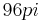
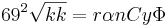

Rancio
 De: La Frikipedia, la enciclopedia extremadamente seria.
De: La Frikipedia, la enciclopedia extremadamente seria.
| De la serie Elementos químicos:
|
|
|
| Nombre oficial:
|
rancio macdonalds viejo
|
| Otros nombres:
|
podrio jediondo
|
| Serie alquímica:
|
la miedus de tus sapatus
|
| Descubridor:
|
tu cundo te cortaste las uñan de bebe
|
| Color en tabla:
|
el de las nalgas de tu mama
|
| Presente en:
|
mierda de la naturaleza
|
| Usos:
|
alimento, jabon, proyectil de largo alcance
|
| Estado:
|
activo y en mac donads
|
| Peso kg/puñao:
|
de 1 g a 60 kg
|
| Estructura:
|
el tuyo
|
| Abstracción:
|
69º Melvin
|
| Humungoso:
|
 radianes
|
Este elemento de la Tabla Periódica (el 86), es fácilmente distinguible por su olor a cebillo de culo vinagre vencido o su gusto a guevo de negro inhodoro de la carretera vieja. Se pueden extraer muestras de este elemento mediante la recoleccion de pelos del culo de tu mama una hamburgesa de mc donald, preferiblemente la mitad o una entera cuando mucho. Tiene la propiedad de hacer que una persona que este expuesta a él mucho tiempo acabe oliendo a zapato de chuck norris y se convierta en marginado social, mendigo, colaborador de la frikipedia o novi@ de micki maus. es capaz de hacer vomitar a una persona entre otras cosas, aunque lo utilizan para hacer queso pecorino del super de la esquina.
AYUDENME estoy mas rancio que el vago que vive en el basurero de la esquena
OJO CUIDADO ADVERTENCIA ACHTUNG
Este elemento se encuentra mayoritariamente en todos lados de hecho, te esta mordiendo la nariz.
Hay que tener mucho cuidado ya quea veces si no te bañas nunca en mucho tiempo ocurre la ranciesintesis, el cual hace que se te caiga la masorca el cucurcucho por lo cual si tocas algo rancio TE VAS A LA MIERDA
ranciesintesis
es el medio por el cual el rancio se caga en jesucristo multiplica, respira, canta triller, te tumba el palito de la risa, etc ...
tambien hay que tener en cuenta que aqui no vale "si no mata engorda" aqui es "si engorda es mc donads"...
pero ojo nodigas eso tres veces cerca de una c de conslador anal M amarilla por que te sale este y te saca las tripas dejandote rancio por dentro ========================================================================================================================>
Cosas que debes o deberías saber:
- La comida cuando se pone rancia se vende, pero con el nombre de churro.
- Tú te pondras rancio con el tiempo, y te venderan como sal en mc donalds
- MONstruo ESpageti VOLador no se pone rancio.
- las razas inferiores tampoco.
- chuck Norris menos todavia.
- Si comes algo racio te vas pal hospitalito.
- Si lo hueles una cosa en mac donald sabras como es el olor a rancio.
- Rancio en realidad es una conspiracion de bill puertas para no bañarse.
- el primer estado de ranciedad data de hace 690000 años por un moco que salio de la naris de chuck norris, por eso ocurrio la extincion de los dinosaurios.
==Cómo reconocer algo rancio:== [[Image:
- Huele como
el culo de tu vieja a la casa tu tia chirimolla, sí, esa que no te deja tocar su verruga, pero eso es bueno por que esa mierda esta llena el virus c Chuck.
- el virus C esta rancio
- sabe como a lo que esta en la esquina de tu habitacion, esa cosa que pareciera que se mueve que es verde oscuro
- Suele formarse una capa medio verde oscuro como la que te sale a tí cuando te pasas el dedo por el pene/vagayay
- Los filipinos con los que
follaste te pasate de copas el otro dia esos los dejaste mas rancios que la señora de la vodega.
- los caleidoscopios son a base de colires rancios
- la formula de lo rancio es 
- 10110110010010100100111
- el carro de dracula y de frankestein estan rancios
- crepusculo esta rancio
- nosferatu no esta rancio ya que es hijo de chuck norris
historia de alguien rancio
hola me llamo herminio y estoy rancio de nacimiento gracias a que mi mama no se lavo la vagina nunca, me crie en un estado de kasaquistán, mi vida es relativamente en normal de niño me decian cara de culo vagina y me ganaba la vida de niño de las cosas que habia en un huerto de maiz de un viejo una vieja y un perro rojo.
cuando era adolecente era un pimp dady gay me llamaban el peneguarro y chuzo e' polla por mi pene sin cabeza, luego ya culminando mi mariconeria pubertad me decidi a ser mas macho y me busque una novia y cual fue mi sorpresa me encontre a una india la cual encontre en el huerto.
ahora a mis 20 años estoy preso por violar a un gato meterlo en el microondas, comermelo y matar a una monja por no darme su mano para una paja.
bueno esa es mi vida...
Autor(es):
- Nexo
- Haakjvork
- Majinkev
- Nadaquever
- Patadaenelcraneo
- Cibercrank
- Veni Vidi Vici
- Gororo
- Rubibetico
- Humbertoandrex
Frikipedia 2005-2016, Licencia
GFDL 1.2 - Extraído por FrikiLeaks